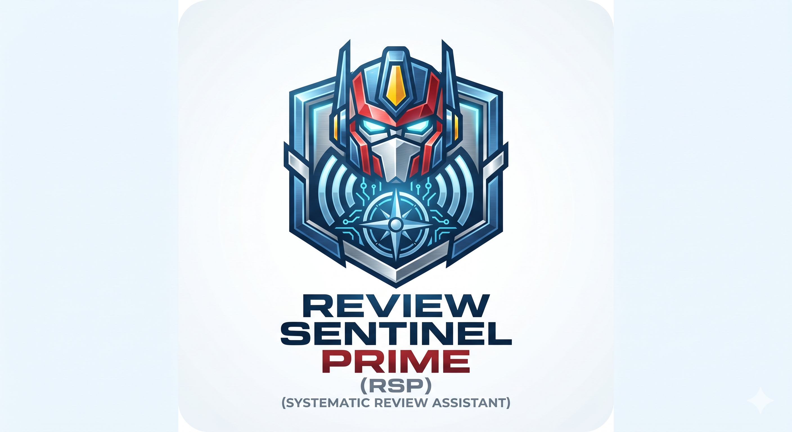

Automated systematic literature review search and management platform with multi-database querying, PRISMA-aligned export, interactive charts, and one-click replication package generation.
How to launch
Double-click the launcher for your operating system. It automatically sets up the Python environment, installs all dependencies, and starts the local server.
The first launch installs Python packages (~30–60 seconds depending on your connection). Subsequent launches start in under 3 seconds. This page auto-redirects the moment the server is detected.
Review Sentinel Prime runs at
http://127.0.0.1:5001 — entirely on your local
machine. The launcher runs the app in the background;
stop it with STOP.bat (Windows) or stop.command
(macOS/Linux).